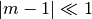
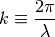
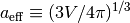
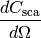

Glossary¶
- Shortname that refers to a particular index file.
- optically thin
- Optically thin refers to materials with an index of refraction very close to 1. 
- wavenumber
The wavenumber is defined to be

where
 is the wavelength of the light.
is the wavelength of the light.- effective radius
The effective radius of a grain is the radius of a (uniform-density) sphere that has the same mass as that grain:

- index file
- The index file refers to a text file containing the index of refraction and
dielectric function for a given material and for a given number of energies. It must
be formatted in a particular way (see
--material-file) - differential scattering cross section
Defined to be

- arcseconds
- An arcsecond is 1/60 th of an arcminute, which in turn is 1/60 th of a degree.
- monomers
- Grains such as BA, BAM1, and BAM2 grains are composed of many spherical particles, called monomers.